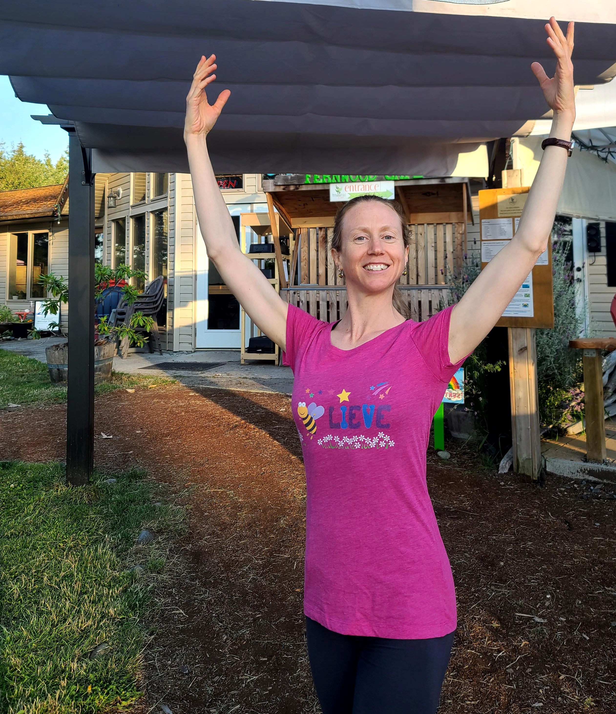

Get our updates
Sign up for our email list to get notifications of new classes. Email
cedarpointdance(at)gmail.com and say "add me to your email list".
How to Register

Register by emailing cedarpointdance(at)gmail.com and sending an
e-transfer to the same email. Registration is not complete until payment
is received. If possible, please register at least 2 days prior to each
class (unless otherwise noted). If the class is full, we’ll let you
know, and your e-transfer payment will not be accepted.
Cancellations: Full refund if you need to cancel due to
illness, otherwise, cancellation requires 24 hrs notice for a refund.
Fall 2022 Classes
Ballet Level 2 - teen & adult
- Time: Fridays, 5:15 – 6:45pm, Sep 9 – Dec 9 (no classes Sep 30, Nov 11, or Dec 2)
- Location: All Saints by-the-Sea upper hall (110 Park Drive)
- Cost: $15/class
- Instructor: Kathryn Luttin
-
Class description: This class is for those with several years of
ballet training who are familiar with common ballet moves (ages 13 to
adult). There will be options for making the combinations more or less
advanced, so don’t worry if you are out of practice. If you are not
sure if this is the right level for you, send us an email and we can
chat.
Ballet Level 2 - Performance Class
-
Performance opportunity! Cedarpoint Dance will be putting on a small performance on Friday,
December 2 at the All Saints by-the-Sea upper hall.
Performers will include the level 2 class, as well as special invited guests.
-
If you plan to attend the level 2 class regularly, you are invited to join the performance group, which will
rehearse for half an hour after each level 2 class. We will learn a group dance that we’ll perform at the
Cedarpoint Dance winter show on December 2. How fun is that?! Yep, you know you want to do it!
- Time: Fridays, 6:45 – 7:15pm, Sep 9 – Nov 25 (no classes Sep 30 or Nov 11)
- Location: All Saints by-the-Sea upper hall (110 Park Drive)
- Cost: $60 total cost to join the performance group. Costumes will be provided, but dancers must have their own ballet shoes and tights.
- Instructor: Kathryn Luttin
-
Details: You must be able to commit to attending most Fridays and must be registered for the level 2 class.
You must be available to perform in the evening on Friday, December 2 (plan to be at the hall from 5pm – 8pm that evening).
REGISTER BY SEPTEMBER 9 in order to reserve your spot.
Beginner Ballet for teens & adults
-
This Thursday evening class will be offered through CRD Parks & Recreation (PARC).
Click here to see PARC programs.
See the listing on page 12 of the Fall recreation guide. This class is offered in 6-week sessions, starting September 15 and October 27.
Make sure to register through the PARC website at least 3 days prior to the start of the 6-week session.
- Instructor: Kathryn Luttin
-
Class description: Learn the beauty and control of classical ballet! This class is for absolute beginners through to those with a
couple years of training. We’ll practice the basic movement patterns and learn some simple combinations to get you moving. This class
is for a diverse range of abilities - you’ll be encouraged to do what works for your body at this time. Wear comfortable clothes that
don’t restrict your movement. Ballet slippers are best, but socks work.
About Kathryn Luttin
Kathryn Luttin is a professionally-trained ballet dancer. She danced with
the National Ballet of Canada as an apprentice, but left professional
dance at the age of 20 due to injuries. She later gained a Master’s degree
in Physical Therapy. Since 2020, she has taught after-school
ballet for the GISPA dance program at the Gulf Islands Secondary School.
She taught ballet at the Rainwood Dance Studio from 2018 - 2021.
Calendar